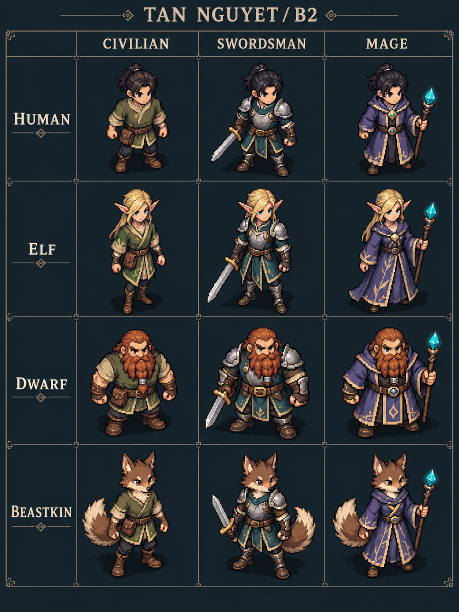
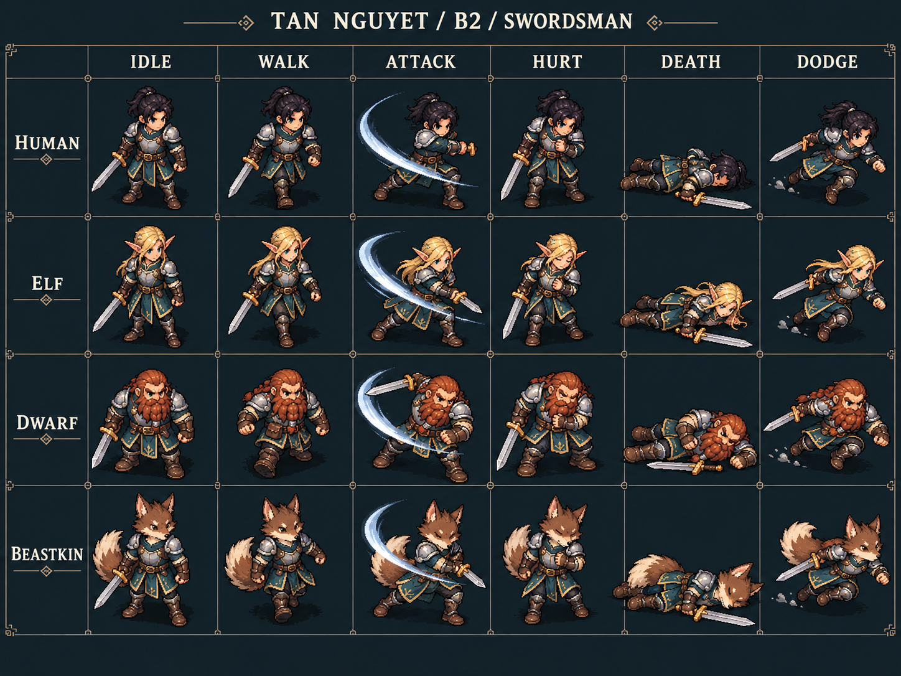
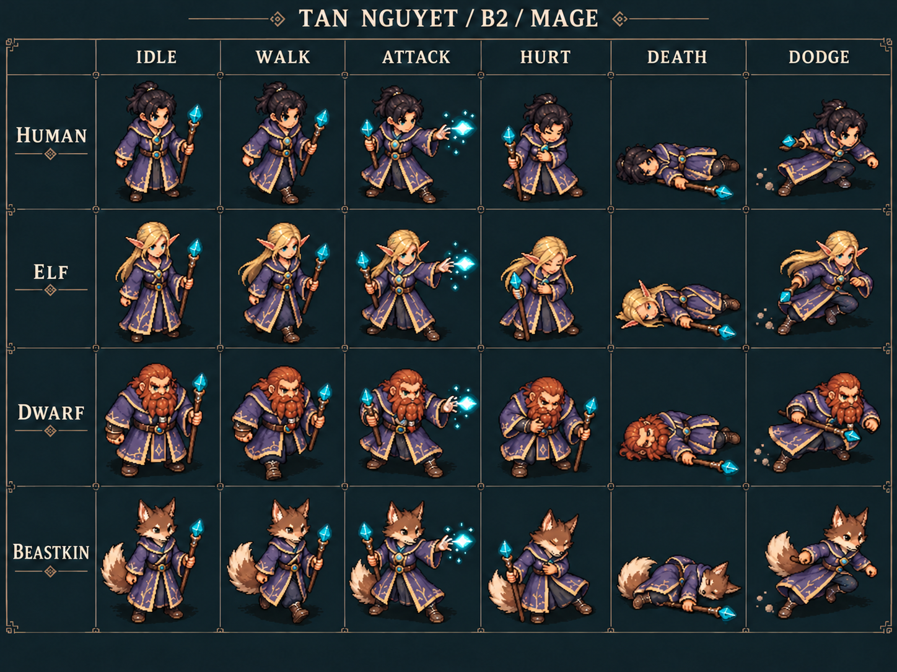
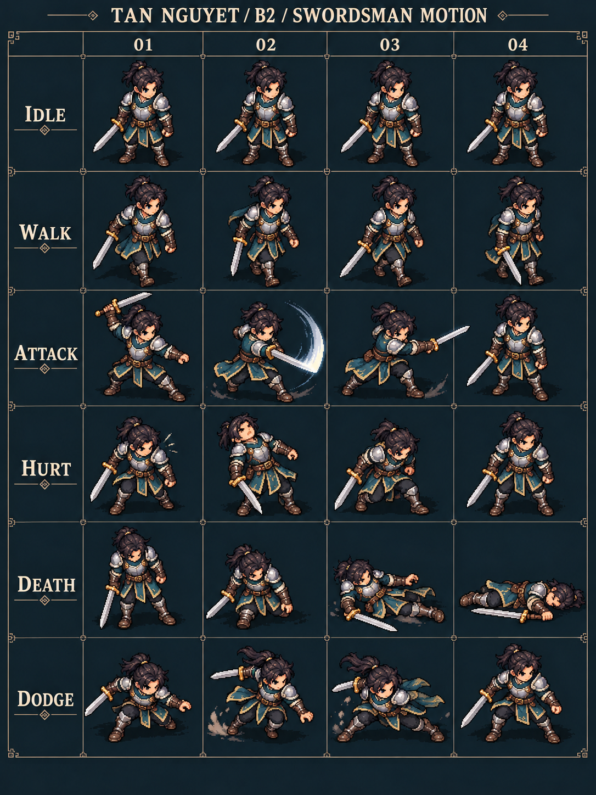
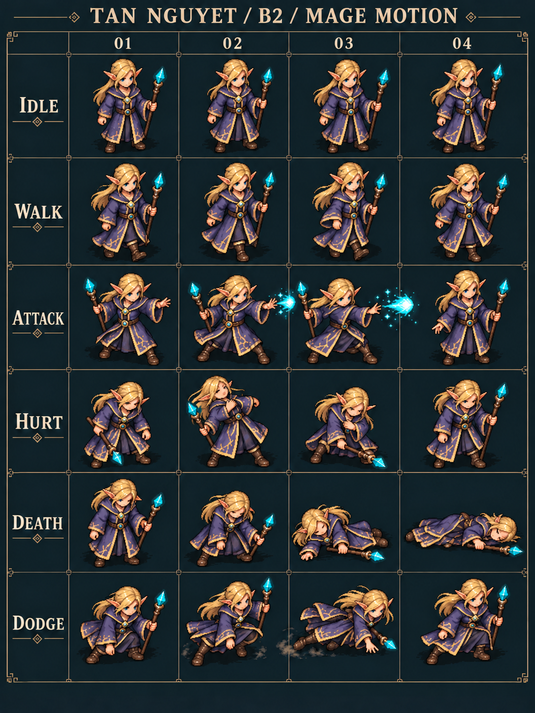

B2.1 — Nhận diện nhân vật
Con Người · Tinh Linh · Người Lùn · Thú Nhân × Dân thường · Kiếm Sĩ · Pháp Sư.

Bốn chủng tộc, hai Class; đủ hình tham chiếu đứng, đi, đánh, trúng đòn, ngã và né.
A, B2, C, D đã được bạn duyệt hình ảnh. B2 đang được dựng thành sprite trong suốt để tích hợp vào game. Các bảng trên trang này là tham chiếu thiết kế và chuyển động.
Chọn ảnh để xem lớn; nhấn Esc để đóng. “Mở ảnh gốc” mở PNG đầy đủ.
Con Người · Tinh Linh · Người Lùn · Thú Nhân × Dân thường · Kiếm Sĩ · Pháp Sư.

Bốn chủng tộc × sáu keypose: Đứng · Đi · Tấn công · Trúng đòn · Gục/ngã · Né. Bảng này dùng để xem hình dáng và độ rõ của từng động tác.

Bốn chủng tộc × sáu keypose: Đứng · Đi · Thi triển phép · Trúng đòn · Gục/ngã · Né. Xem độ khác biệt với Kiếm Sĩ và khả năng đọc được cơ thể dưới áo choàng.

Sáu hàng trạng thái; mỗi hàng bốn hình theo thứ tự từ trái sang phải. Đây là bảng hình tham chiếu nhịp chuyển động, chưa phải animation chạy trong game.

Sáu hàng trạng thái; mỗi hàng bốn hình theo thứ tự từ trái sang phải. Xem động tác cầm trượng, thi triển phép, trúng đòn, ngã và né.
